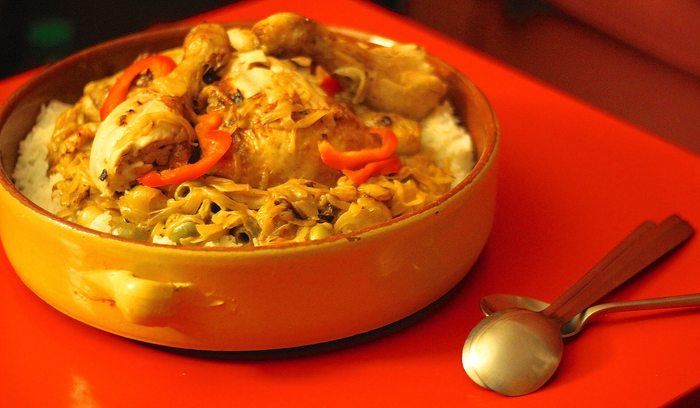
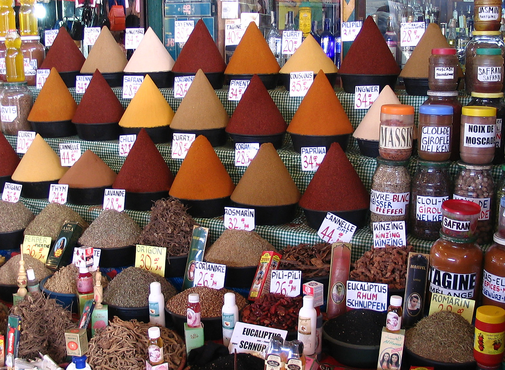
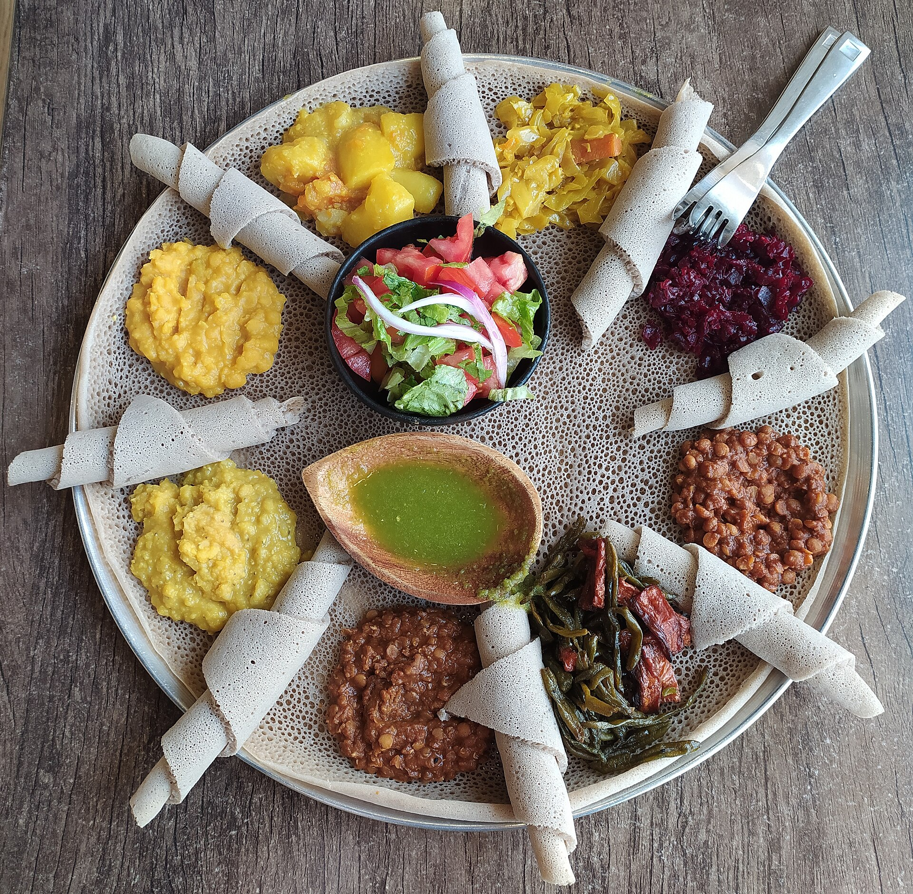

Culinary regions
One continent, many kitchens
Africa is home to 54 countries and thousands of food traditions. Our region guides explore the staples, spices and techniques that shape each part of the continent.

Nigeria · Ghana · Senegal
West Africa
Bold, layered and generous — a cuisine of one-pot rice, pounded swallows and smoky street grills.
Explore West Africa
Morocco · Algeria · Tunisia
North Africa
Aromatic and refined — where warm spices, dried fruit and slow cooking create a perfect sweet–savoury balance.
Explore North Africa
Ethiopia · Eritrea · Kenya
East Africa
From fermented injera in the highlands to spice-scented pilau on the Swahili coast.
Explore East Africa
Compare
Regions at a glance
| Region | Key staples | Signature spice | Iconic dish |
|---|---|---|---|
| West Africa | Rice, yam, cassava, plantain | Scotch bonnet | Jollof rice |
| North Africa | Semolina, chickpeas, olives | Ras el hanout | Tagine |
| East Africa | Teff, maize, matoke | Berbere | Injera |
| Southern Africa | Maize, beef, bread | Durban masala | Bunny chow |